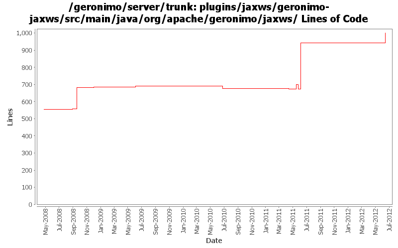

[root]/plugins/jaxws/geronimo-jaxws/src/main/java/org/apache/geronimo/jaxws
 annotations
(2 files, 206 lines)
annotations
(2 files, 206 lines)
 client
(3 files, 460 lines)
client
(3 files, 460 lines)
 feature
(4 files, 324 lines)
feature
(4 files, 324 lines)
 handler
(4 files, 527 lines)
handler
(4 files, 527 lines)
 info
(3 files, 102 lines)
info
(3 files, 102 lines)
 wsdl
(5 files, 523 lines)
wsdl
(5 files, 523 lines)

| Author | Changes | Lines of Code | Lines per Change |
|---|---|---|---|
| Totals | 28 (100.0%) | 690 (100.0%) | 24.6 |
| xuhaihong | 12 (42.9%) | 545 (79.0%) | 45.4 |
| gawor | 12 (42.9%) | 142 (20.6%) | 11.8 |
| jdillon | 3 (10.7%) | 3 (0.4%) | 1.0 |
| djencks | 1 (3.6%) | 0 (0.0%) | 0.0 |
GERONIMO-6364 jaxws-catalog-tests test failed for UnknownHostExceptiion
Since Geronimo installs the whole ear as one bundle now, there may be issues while reading wsdl and jax-ws-catalog.xml file. Now the solution is that,
for WAR in EAR, as the WAR will be extracted, we will add the module directory prefix for those files, so that bundle.getEntry could work.
for EJB in EAR, the url will be something like ejb.jar!/META-INF/a.wsdl, we will try to build a jar URL to get the resource, one thing that needs to improve is that, this kind of URL will cause a full copy of the target jar file, as JarURLHandler may not recognize the bundleentry protocol.
68 lines of code changed in 1 file:
GERONIMO-6058 Replace StringBuffer usage with StringBuilder
1 lines of code changed in 1 file:
GERONIMO-5990 A JAXWSApplicationContext GBean is added to hold all the available port info in the current web or ejb module
I hope that in the future, we could have a way to avoid create each factory gbean for each web service endpoint, and there will be a method like getWebServiceContainer method in this gbean
342 lines of code changed in 4 files:
1. Use the new unmarshall method to parsing handler configuration files
2. Use Info style serializable objects to hold the handler info, and avoid unwanted marshall/unmarshall
7 lines of code changed in 2 files:
1. Support lookup attribute for webservice ref
2. Enable webservices.xml override the configurations from annotations
40 lines of code changed in 1 file:
GERONIMO-5902 Refract the codes, remove the isEJB parameter from the interface
13 lines of code changed in 1 file:
GERONIMO-5190 use openejb-jee jaxb tree for spec dds
0 lines of code changed in 1 file:
a. remove the use of configurationUrl \n b. Add a BundleAwareReference interface
70 lines of code changed in 1 file:
GERONIMO-5057 Use those xmlbeans generated by JAVA EE 6 schema files
4 lines of code changed in 1 file:
catch @WebServiceProvider servies without WSDL early (GERONIMO-4664)
4 lines of code changed in 1 file:
Support OASIS catalogs with service-ref with Axis2 (GERONIMO-4501)
3 lines of code changed in 1 file:
Support OASIS catalogs with Axis2 (GERONIMO-4501)
0 lines of code changed in 2 files:
override mtom setting only when it is explicitly set in the DD
3 lines of code changed in 1 file:
update service address in http binding. Patch from Ivan (GERONIMO-4436)
3 lines of code changed in 1 file:
update service address in WSDL on each request (GERONIMO-4308)
125 lines of code changed in 1 file:
some more jaxws refactoring
4 lines of code changed in 3 files:
Upgrade to CXF 2.1.x and refactor HandlerResolver code (GERONIMO-4263)
0 lines of code changed in 2 files:
More loggers back to static
3 lines of code changed in 1 file:
(GERONIMO-3985) Use SLF4J as the primary logging facade for Geronimo
0 lines of code changed in 2 files: